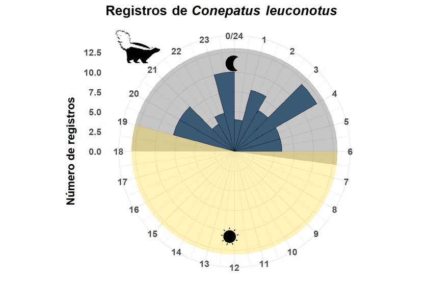
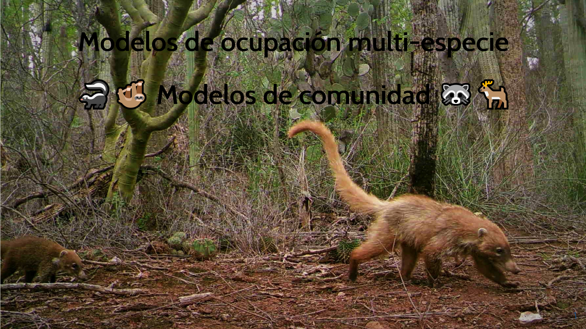

Gabriel Andrade-Ponce
About
Blog
Publicaciones
Categories
Comunidades
Gráficos
Modelos
Moran
Ocupación
análisis
autocorrelacion
Blog
Tutoriales, presentaciones y más
Order By
Default
Title
Date - Oldest
Date - Newest
Author

Gráfico de radar
Gráficos
10 May 2022
Independencia espacial
autocorrelacion
análisis
Moran
8 June 2022

Modelos de ocupación para comunidades
Modelos
Comunidades
Ocupación
30 April 2022
No matching items